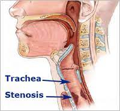

Tracheal stenosis

CAUSES
Studies show intubation to treat respiratory conditions accounts for more than 60% of tracheal stenosis in adults. Intubation involves inserting a breathing tube into your trachea so you can breathe
SYMPTOMS
Many tracheal stenosis symptoms are the same for children and adults. Here are some symptoms children and adults have in common:
- Difficulty breathing after everyday activities like climbing stairs or walking.
-
Wheezing.
-
Persistent cough.
-
Difficulty coughing up mucus.
-
Frequent colds, bouts of pneumonia or other respiratory infections.
-
Persistent asthma that isn’t better after treatment.
Chest congestion.
-
Pauses in breathing (apnea) and sleep apnea.
DIAGNOSIS
Healthcare providers use several tests to diagnose tracheal stenosis and decide how to treat it. Those tests might include:
- Bronchoscopy. Healthcare providers insert a thin, bendable tube into your mouth and down to your trachea while you are sedated so they can see how your trachea functions when you breathe in and out.
-
Laryngoscopy. Healthcare providers insert a thin, bendable tube into your nose and down to your trachea in the office without sedation so they can see how your tracheal anatomy appears.
- .
Computed Tomography (CT) scan.
TREATMENTS
Tracheal stenosis is usually treated with surgery. Healthcare providers consider several factors before deciding on your treatment options